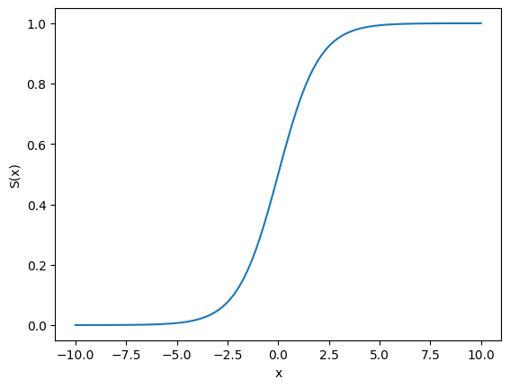

a = 1
Plott den logistiske funksjonen (s. 139 i ITSL). Hvorfor er denne funksjonen egnet til å predikere et binært kategorisk utfall?
a = 1
import numpy as np
import matplotlib.pyplot as plt
def logistisk(x, beta_0=0, beta_1=1):
z = beta_0 + beta_1*x
return np.exp(z) / (1 + np.exp(z))
x = np.linspace(-10, 10, 100)
y = logistisk(x)
plt.plot(x, y)
plt.xlabel('x')
plt.ylabel('S(x)')
plt.show()Uforsk hvordan parametrene \(\beta_0\) og \(\beta_1\) flytter på funksjonen.
from ipywidgets import interact, FloatSlider
import numpy as np
import matplotlib.pyplot as plt
def logistisk(x, beta_0=0, beta_1=1):
z = beta_0 + beta_1 * x
return np.exp(z) / (1 + np.exp(z))
def plot_logistisk(x_range, beta_0, beta_1):
x = np.linspace(-(x_range), x_range, 100)
y = logistisk(x, beta_0, beta_1)
plt.plot(x, y)
plt.xlabel('x')
plt.ylabel('S(x)')
plt.show()
interact(plot_logistisk, x_range=FloatSlider(value=10, min=0, max=20, step=0.1, description='x range'),
beta_0=FloatSlider(value=0, min=-10, max=10, step=0.1, description='beta_0'),
beta_1=FloatSlider(value=1, min=-10, max=10, step=0.1, description='beta_1'))<function __main__.plot_logistisk(x_range, beta_0, beta_1)>Last inn default-datasettet (zenodo.org/record/6199560/files/default.csv). Plott mislighold mot hvor mye kredittkortlån en person har (balance). Ser du noen sammenheng i dataene?
import pandas as pd
# Last datasettet
url = 'https://zenodo.org/record/6199560/files/default.csv'
data = pd.read_csv(url)
# Inspiser litt
display(data.head(3))
# Lag et scatterplot
def scatterplot(x, y):
plt.scatter(data[x], data[y])
x_label = 'Inntekt' if x == 'income' else 'Kredittbalanse (balance)'
y_title = "Student" if y == "student" else "Mislighold (default)"
plt.xlabel(x_label)
plt.ylabel(y_title)
plt.title(f'{y_title} vs {x_label}')
plt.show()
# let's make it interactive: you can select looking at either the balance or income
interact(scatterplot, x=['balance', 'income'], y=['default', 'student'])| Unnamed: 0 | default | student | balance | income | |
|---|---|---|---|---|---|
| 0 | 1 | No | No | 729.526495 | 44361.625074 |
| 1 | 2 | No | Yes | 817.180407 | 12106.134700 |
| 2 | 3 | No | No | 1073.549164 | 31767.138947 |
<function __main__.scatterplot(x, y)>balance vs defaultBruk funksjonen np.histogram til å lage et histogram over hvem som misligholder og ikke. Bruk deretter histogramverdiene til å regne ut hvor stor andel som misligholder kridittkortlånene innenfor hvert intervall av balance.
Max lånbeløp (balance) var ca 2500, så vi runder opp til 3000 for å ha litt slingringsmonn. Vi lager f.eks 100 bins fra 0 til 3000.
Så beregner vi histogrammer for df_yes og df_no. np.histogram deler dataene inn i x antall bins (intervaller) og returnerer antall verdier i hver bin (hist_yes og hist_no), samt kantene av disse bins’ene (edges).
from ipywidgets import IntSlider
def splitt_ja_nei(data, column):
""" Returnerer to tabellobjekt - ett hvor svaret er ja, og ett for nei """
return data[data[column] == 'Yes'], data[data[column] == 'No']
def få_histogram_og_edges(data, kolonne, bins):
max_value = data[kolonne].max()
# rund av til nærmeste 1000
max_value = 1000 * np.ceil(max_value / 1000)
intervaller = np.linspace(0, max_value, bins)
hist, edges = np.histogram(data[kolonne], bins=intervaller)
return hist, edges
def plot_histogram(x, y, bins):
intervaller = np.linspace(0, 3000, bins)
df_ja, df_nei = splitt_ja_nei(data, y)
hist_yes, edges = få_histogram_og_edges(df_ja, x, bins)
hist_no, edges = få_histogram_og_edges(df_nei, x, bins)
plt.plot(intervaller[:-1], hist_yes, label='Yes')
plt.plot(intervaller[:-1], hist_no, label='No')
x_label = 'Inntekt' if x == 'income' else 'Kredittbalanse (balance)'
y_title = "Student" if y == "student" else "Mislighold (default)"
y_label = f'Antall hvor {y_title} = Yes/No'
plt.xlabel(x_label)
plt.ylabel(y_label)
plt.legend()
plt.show()
interact(plot_histogram, x=['balance', 'income'], y=['default', 'student'], bins=IntSlider(value=50, min=10, max=100, step=1, description='Antall bins'))<function __main__.plot_histogram(x, y, bins)>edges[:-1] tar alle elementene i edges bortsett fra det siste.
np.diff(edges) beregner forskjellen mellom påfølgende elementer i edges.
Ved å legge disse sammen, får vi midtpunktene til hver bin.
diff: “The first difference is given by out[i] = a[i+1] - a[i] along the given axis, higher differences are calculated by using diff recursively.”
Så beregner vi proposjonene av hist_yes i forhold til summen av hist_yes og hist_no for hver bin. Dette gir oss en ide om fordelingen mellom de to datasettene.
def update_plot(x, y, bins):
df_yes, df_no = splitt_ja_nei(data, y)
hist_yes, edges = få_histogram_og_edges(df_yes, x, bins)
hist_no, edges = få_histogram_og_edges(df_no, x, bins)
midtpunkt = edges[:-1] + np.diff(edges)
proposjoner = (hist_yes + 1) / (hist_yes + hist_no + 1)
plt.plot(midtpunkt, proposjoner)
x_label = 'Inntekt' if x == 'income' else 'Kredittbalanse (balance)'
y_title = "Student" if y == "student" else "Mislighold (default)"
plt.xlabel(x_label)
plt.ylabel(f'Andel av {y_title}')
plt.title(f'Andel av {y_title} for hver {x_label}-intervall')
plt.show()
interact(update_plot, x=['balance', 'income'], y=['default', 'student'], bins=IntSlider(value=50, min=10, max=100, step=1, description='Antall bins'))<function __main__.update_plot(x, y, bins)>Tada! Data for “yes”/“no” har blitt konvertert til sannsynligheter for “yes” (mislighold), gitt at man er innenfor en gitt “gruppe” med kredittsaldo!
Prøv å finne gode verdier for parametrene \(\beta_0\) og \(\beta_1\) slik at du får tegnet en logistisk funksjon som følger dataene brukbart. Trenger ikke å fintune helt, bare finne en strek som er sånn noen lunde på rett sted.
Vi prøver oss fram. Lista viser en rekke med forsøk inn mot noenlunde gode verdier
from ipywidgets import FloatSlider, IntSlider
# Create sliders for beta_0, beta_1, and bins
beta_0_slider = FloatSlider(value=-13, min=-30, max=0, step=1, description='beta_0', readout_format='.1f')
beta_1_slider = FloatSlider(value=0.005, min=0, max=0.01, step=0.0001, description='beta_1', readout_format='.4f')
bins_slider = IntSlider(value=50, min=10, max=100, step=1, description='Bins')
def plot_logistisk_interactive(x, y, beta_0, beta_1, bins):
df_yes, df_no = splitt_ja_nei(data, y)
hist_yes, edges = få_histogram_og_edges(df_yes, x, bins)
hist_no, edges = få_histogram_og_edges(df_no, x, bins)
midtpunkt = edges[:-1] + np.diff(edges)
proposjoner = (hist_yes + 1) / (hist_yes + hist_no + 1)
plt.plot(midtpunkt, proposjoner)
predicted_y = logistisk(midtpunkt, beta_0=beta_0, beta_1=beta_1)
plt.plot(midtpunkt, predicted_y, label=rf"$\beta_0={beta_0:.1f}, \beta_1={beta_1:.4f}$")
x_label = 'Inntekt' if x == 'income' else 'Kredittbalanse (balance)'
y_title = "Student" if y == "student" else "Mislighold (default)"
y_label = f'Sannsynlighet for {y_title}'
plt.xlabel(x_label)
plt.ylabel(y_label)
plt.title(f'Logistisk regresjon av {y_title} vs {x_label}')
plt.legend()
plt.show()
interact(plot_logistisk_interactive, x=['balance', 'income'], y=['default', 'student'], beta_0=beta_0_slider, beta_1=beta_1_slider, bins=bins_slider)<function __main__.plot_logistisk_interactive(x, y, beta_0, beta_1, bins)>